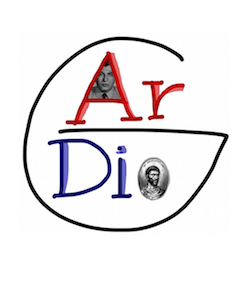

The aim of the meeting is to gather experts studying various questions concerning Arakelov geometry and connected topics. It is a yearly tradition, with main coordinators Burgos Gil, Maillot, Moriwaki, ...
The Seminar is organized for the first time in Copenhagen this year!
Location:
University of Copenhagen: TBA, Department of Mathematical Science, Universitetsparken 5, 2100 Copenhagen.
Dates:
3-7 September 2018.
Speakers:
Program:
The conference will start at 9:00 on Monday 3 and will end at 12:30 on Friday 7.
TBA for the detailed program.
Organizers:
Gerard Freixas (CNRS IMJ-PRG), Lars Halle (Univ. Copenhagen), Alberto Navarro (Univ. Zurich), Fabien Pazuki (Univ. Copenhagen).
Registration:
There is no registration fee but if you want to participate we kindly ask you to send an email to Alberto Navarro on alberto.navarro.garmendia "at" gmail.com.
Directions:
The conference will take place in Auditorium TBA, in the Math Building of Copenhagen University. If you arrive from the airport, take the metro to Nørreport. If you arrive from the Main Train station, take an S-tog to Nørreport. Once you have reached Nørreport, grab the bus 150S (or 184, or 185) and stop at Universitetsparken. The Math Building is a small grey cube behind three huge parallele buildings with curious orange small balconies. Nota Bene: In case you need to enter the math building after 19:00 during the week or any time on Saturday 8, you will need the help of a local to open the doors.
Participants:
TBA.
Sponsors:
Department of Mathematical Sciences (Denmark) and
ANR Gardio (France).
